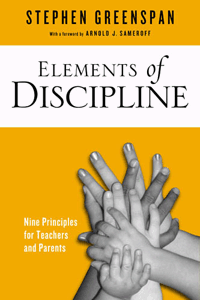

How teachers and parents can cultivate competent, happy children using a few simple principles as their guide
How teachers and parents can cultivate competent, happy children using a few simple principles as their guide


 How teachers and parents can cultivate competent, happy children using a few simple principles as their guide
How teachers and parents can cultivate competent, happy children using a few simple principles as their guide

|  |
Elements of DisciplineNine Principles for Teachers and ParentsWith a Foreword by Arnold SameroffStephen Greenspanpaper EAN: 978-1-43990-897-6 (ISBN: 1-4399-0897-4) |
"Any caregiver who makes the effort to read and understand this book will undoubtedly become more knowledgeable about discipline and more effective in relating to children."
—From the Foreword by Arnold J. Sameroff, Professor Emeritus of Psychology and Human Development, University of Michigan and Former President, The Society for Research in Child Development
Elements of Discipline is a timely and helpful book for teachers, parents, and day-care professionals that provides a simple set of rules for managing—successfully and humanely—a wide range of discipline situations and challenges. A well-respected child development specialist, Stephen Greenspan outlines his "ABC Theory of Discipline." He combines an Affective approach, a Behavioral approach, and a Cognitive approach that, when used in a coordinated fashion, will contribute to greater child compliance and family/classroom harmony.
Greenspan suggests that, using his matrix, caregivers can provide the warmth, tolerance, and influence that will help children become competent in three socio-emotional domains—happiness, boldness, and niceness. He recommends caregivers pick and choose from the discipline literature in a manner that best suits their individual style and values.
Elements of Discipline is a lively guide to effective classroom or family management.
Excerpt available at www.temple.edu/tempress
"Elements of Discipline is the most cohesive, concrete, and practical treatment of the topic of discipline I have read to date. Stephen Greenspan's latest work is a must read for teachers and parents alike."
—Robert J. Marzano, author of The Art and Science of Teaching and Classroom Management That Works
"Elements of Discipline provides a novel synthesis and integration that makes a new, and I believe very valuable, contribution to the field. The book is one that I would recommend to students and colleagues, both for their own personal benefit and to use in their teaching and professional work. Greenspan offers a helpful perspective to disciplining children."
—Robert Laird, Professor in the Department of Psychology at the University of New Orleans
"Greenspan offers a guided discussion on an affective-aware approach to disciplinary practices for both school and home. Throughout the book, Greenspan diligently explains key principles critical to understanding the rationale for incorporating a positivistic approach to discipline and the inherent benefits to children, adolescents, and adults. A thorough discussion is meticulously crafted to offer an explanation of concepts, application, and theoretical connections to existing emotional/behavioral perspectives.... A well-rounded index of theories, terminology, and common behavioral practices to assist readers in developing a more comprehensive understanding to successful discipline completes the book. Summing Up: Recommended."
—Choice
Foreword, by Arnold J. Sameroff
Preface
Acknowledgments
1. In Search of Balance: Domains of Discipline and Long-Term Outcomes
2. The Affective Approach to Discipline: Underpinnings and Three Principles
3. The Behavioral Approach to Discipline: Underpinnings and Three Principles
4. The Cognitive Approach to Discipline: Underpinnings and Three Principles
5. Case Studies in Discipline: Using the Three Approaches to Address Behavioral Challenges
6. The ABC Model of Discipline: Linking Domains, Principles, and Outcomes
7. The ABC Tool Kit: Using the Nine Principles to Deal with Discipline Problems
8. Developing an Effective Discipline Style: Using the ABC Model to Refine the Caregiver’s Approach to Discipline
Appendix A: Glossary
Appendix B: Using the ABC Model to Evaluate Discipline Advice
References
Index
Stephen Greenspan is a developmental psychologist who is Clinical Professor of Psychiatry at the University of Colorado and Emeritus Professor of Educational Psychology at the University of Connecticut, where he coordinated the graduate program in Special Education. A widely-cited authority on social competence, especially in at-risk children, youth and adults, he was the 2011 recipient of the John Jacobson Award for Critical Thinking from the American Psychological Association.
Education
General Interest
Psychology
© 2015 Temple University. All Rights Reserved. This page: http://www.temple.edu/tempress/titles/2212_reg.html.